Generating intermediate video content of varying lengths based on given first and last frames, along with text prompt information, offers significant research and application potential. However, traditional frame interpolation tasks primarily focus on scenarios with a small number of frames, no text control, and minimal differences between the first and last frames. Recent community developers have utilized large video models represented by Wan to endow frame-to-frame capabilities. However, these models can only generate a fixed number of frames and often fail to produce satisfactory results for certain frame lengths, while this setting lacks a clear official definition and a well-established benchmark. In this paper, we first propose a new practical Semantic Frame Interpolation (SFI) task from the perspective of academic definition, which covers the above two settings and supports inference at multiple frame rates. To achieve this goal, we propose a novel SemFi model building upon Wan2.1, which incorporates a Mixture-of-LoRA module to ensure the generation of high-consistency content that aligns with control conditions across various frame length limitations. Furthermore, we propose SFI-300K, the first general-purpose dataset and benchmark specifically designed for SFI. To support this, we collect and process data from the perspective of SFI, carefully designing evaluation metrics and methods to assess the model’s performance across multiple dimensions, encompassing image and video, and various aspects, including consistency and diversity. Through extensive experiments on SFI-300K, we demonstrate that our method is particularly well-suited to meet the requirements of the SFI task.
SemFi employs a Mixture-of-LoRA module to dynamically activate the most suitable LoRA parameters for the target frame count, enabling high-quality semantic frame interpolation across diverse frame generation requirements.
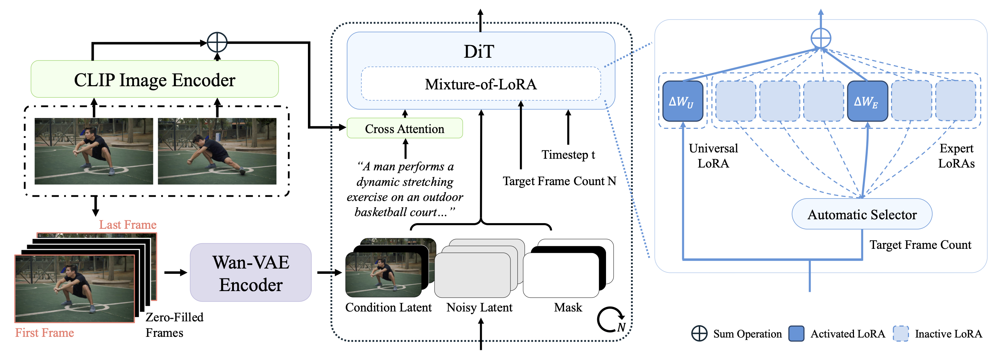
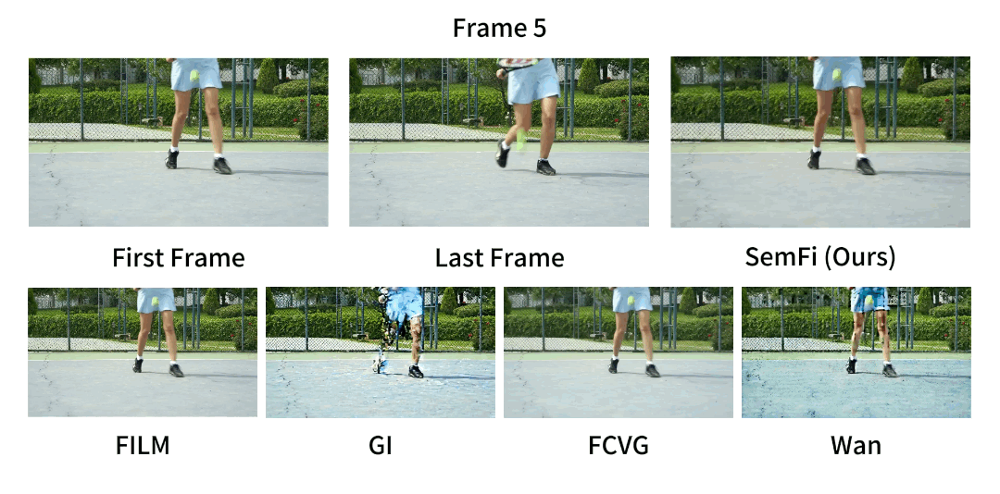
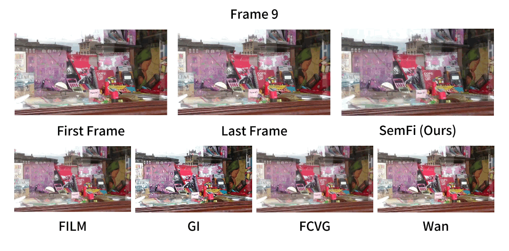
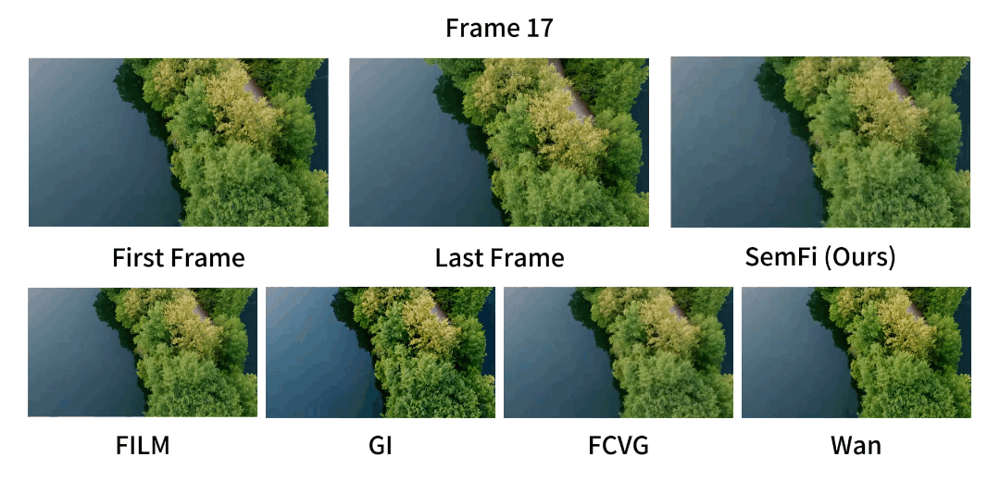
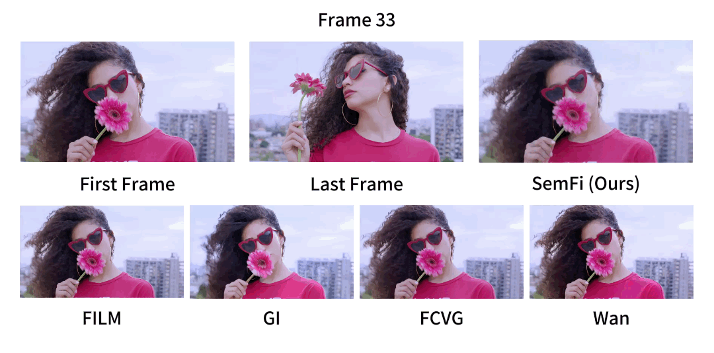
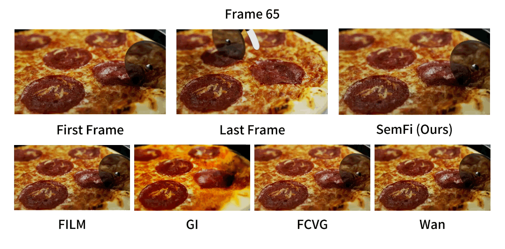
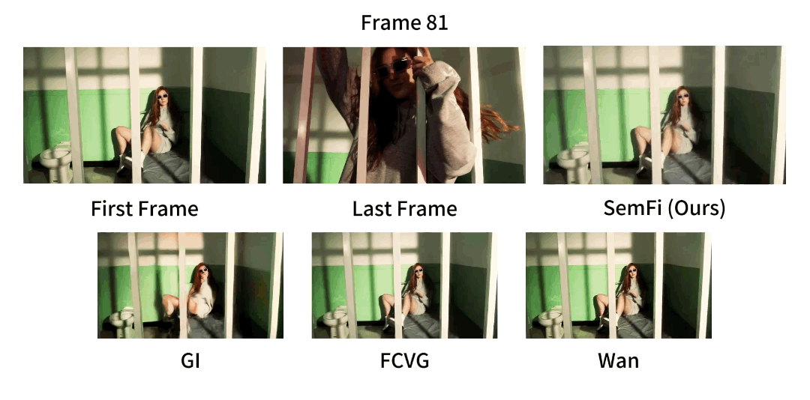
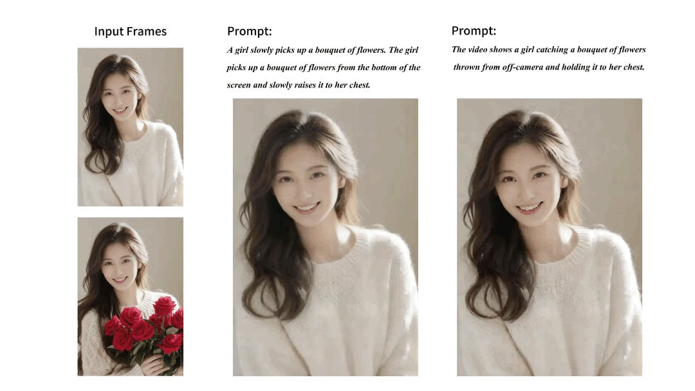
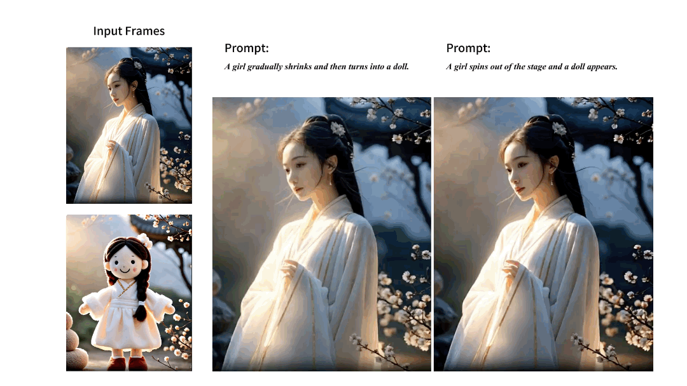
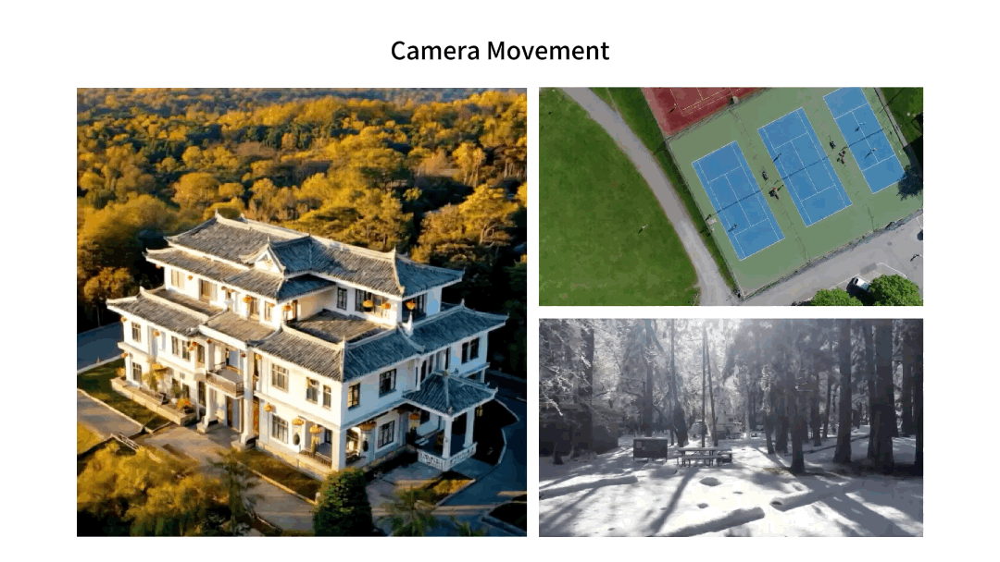
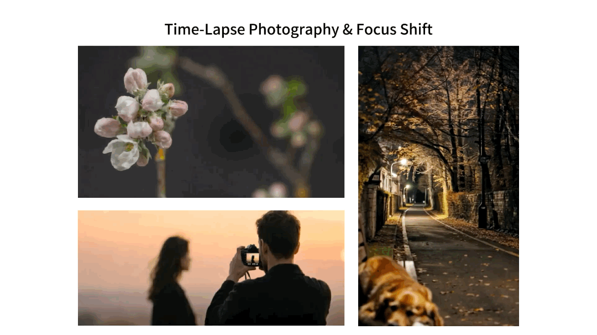
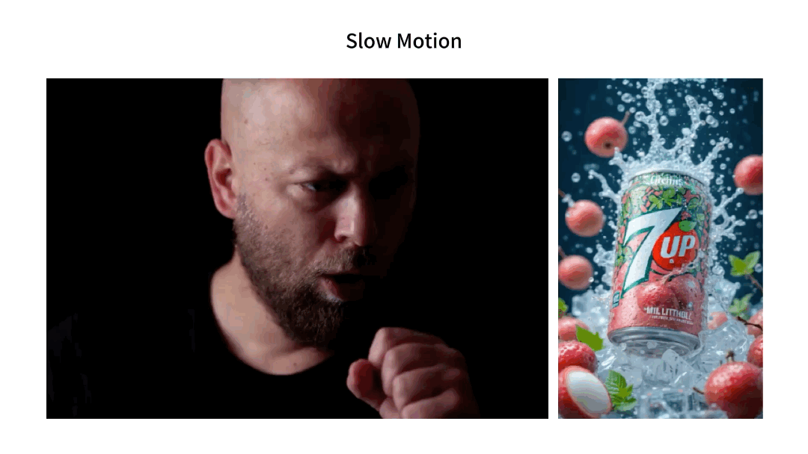
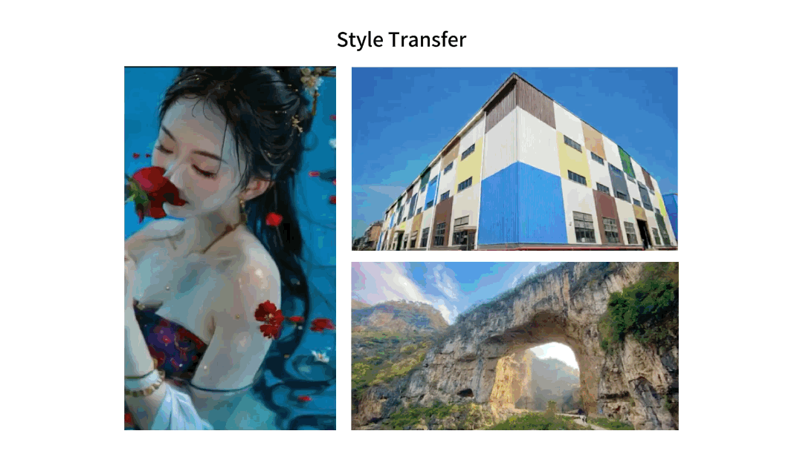
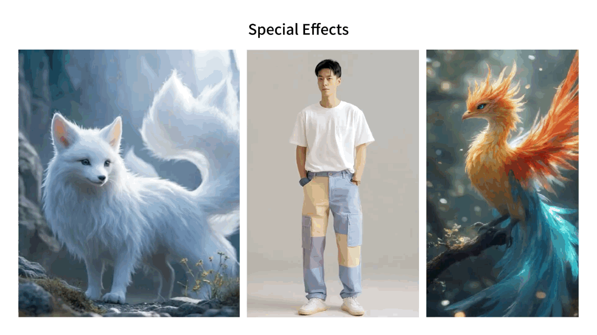
Our project benefits from the amazing open-source projects:
We would like to thank the authors of these projects for their contributions to the community.
@article{hong2026semantic,
title={Semantic frame interpolation},
author={Hong, Yijia and Zhang, Jiangning and Yi, Ran and Cao, Weijian and Hu, Xiaobin and Ma, Lizhuang and Yan, Shuicheng},
journal={IEEE Transactions on Image Processing},
year={2026},
publisher={IEEE}
}